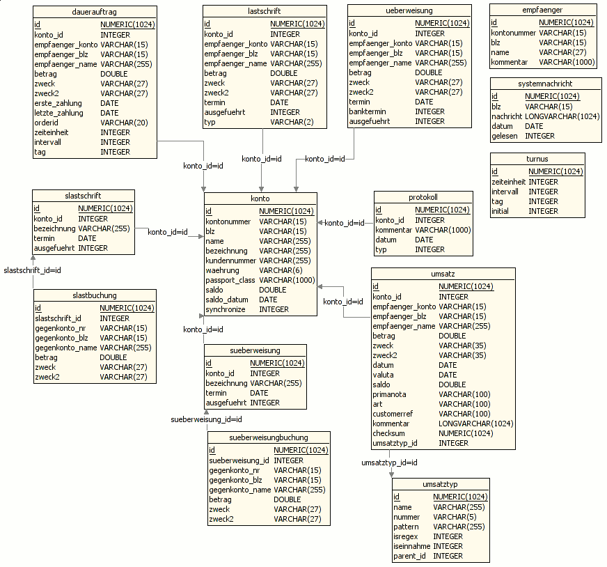

Informationen für Entwickler
API-Dokumentation, Quell-Code
Wenn Sie selbst Erweiterungen in Form von Plugins oder zusätzlichen
Sicherheitsmedien entwickeln möchten, lesen Sie bitte die
JavaDoc-Dokumentation und laden
Sie sich den Quellcode der Anwendung.
Datenbankmodell

$Revision: 1.1 $